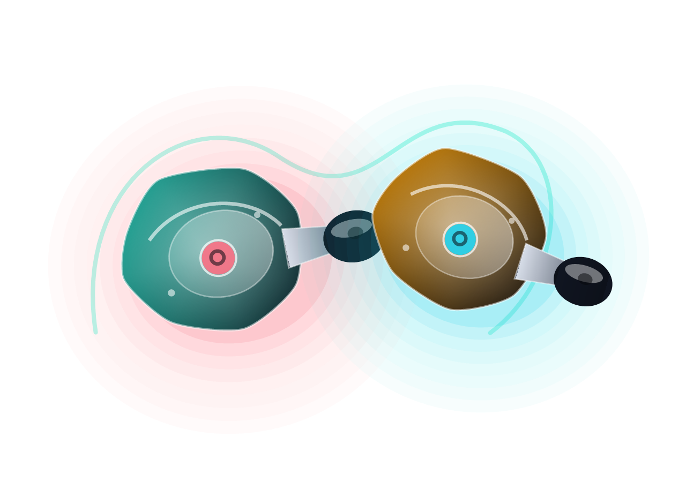

Dixon finder
Choose your IEM with less guessing.
Compare the Dixon lineup by use case, sound style, driver setup, shell fit, and price. The quick finder below updates instantly when you change your preferences.

Recommended match
Dixon Monitor 7
Neutral mids, tight low end, and a calmer treble for editing long sessions.
Model comparison.
A fast overview of price, tuning, fit, and ideal listener for each Dixon model.
| Model | Price | Driver | Tuning | Fit | Best for |
|---|---|---|---|---|---|
| Monitor 7 | $189 | 1 DD + 2 BA | Reference balanced | Medium universal | Mixing, editing, acoustic music |
| Stage X | $249 | 2 DD + 4 BA | Energetic and clear | Deep secure seal | Performers, vocalists, drummers |
| Aura One | $159 | 10 mm DD + BA | Warm clean | Compact universal | Long sessions, playlists, streaming |
| Pulse Wireless | $139 | 10 mm DD | Warm balanced | Hook-supported | Travel, calls, casual gaming |
| Neon Lite | $99 | Single DD | Bright and punchy | Small universal | Practice, first IEM, mobile listening |